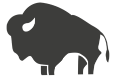

At Colorado Denim we have one word that we emphasize in our day to day work, that word is trust. Not only trust between us and our consumers, but trust in one another to do the job the right way. Trust does not come cheap and we know that. We have spent years building it with our community by providing high quality, versatile jeans and a price that can’t be beat. Colorado Denim products are made in our local factories with sustainable materials that give our customers a blend of functionality and fashion. We strive to deliver products that are friendly to the environment, but at the same time give people the best value for their dollar. We also emphasize the trust between our employees across the company. Whether it be a cashier working on the floor or an accountant balancing the spreadsheets, everyone at Colorado Denim has trust in each other and the product. This creates a team oriented, friendly environment that people enjoy working at. We wish to provide our employees with experience they can use to develop as leaders and grow as people that will help them throughout their careers. Our employee retention rate is 92% which says a lot about how much our employees love working here. If you wish to be part of the Colorado Denim family fill out an application


I first started at Colorado Denim 6 years ago as an intern. In my time with the company I have come to realize it is so much more than just a business, it’s a family. Everyone is open minded to new ideas and willing to take you under their wing and guide you through the days. They offer competitive pay and job growth so it never feels like I am stuck. I love this company and I hope to spend many more years here.
Colorado Denim is one of the easiest places I have worked at. My peers challenge me to grow and come up with new ideas every day. I have been given the opportunity to grow as a leader and I am so thankful for that. Colorado Denim has given me so many opportunities throughout my 15 years here and I am excited for what is to come in the future.
Colorado Denim has a great culture that emphasizes personal growth. I appreciate how much community service we do as a company and I am glad to work at a company that shares the same values as me. I have gained valuable experience that will further my career throughout my years working here.
Colorado Denim has been a staple in the town of Fort Collins since 1945 when the company was founded by Edward Stevens. At Colorado Denim we believe in giving back to the community that supports us. On one Sunday every month we send 15 of our employees to local soup kitchens and homeless shelters. This brings the Colorado Denim closer to each other and our community. We also host Christmas toy drive every year for low income families. We also have a promise to give back to the beautiful planet that we live on. Since 2013, we have pledged to donate 1% of our sales every year to charities that work on the preservation of national parks. We believe your children should be able to experience the same world that you did, and look good doing it, in Colorado Denim Jeans.